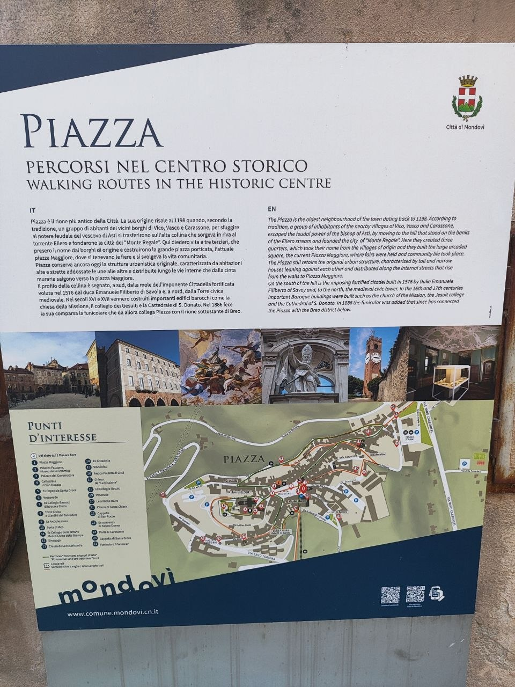

Borghi fuori rotta, trekking tra le vigne, trattorie vere e menù da decifrare
Tutti i luoghi con link Google Maps citati in questa guida — soggiorno, borghi, trekking, ristoranti, dintorni di Busca, Cuneo e Torino — con pin colorati per categoria. Clicca su un pin per il nome del luogo e il link a Google Maps; usa i filtri sotto per isolare una categoria (il numero indica quanti luoghi ci sono in ciascuna).
Mappa realizzata con Leaflet e dati OpenStreetMap. Le coordinate sono ottenute per geocoding automatico dal nome del luogo: per indirizzi molto specifici o insegne minori la posizione può essere approssimata al centro del comune o della via più vicina — verifica sempre su Google Maps prima di partire.
Appartamento a Via Molinengo 30, frazione Chiabrero, Busca (CN) — circa 6 km dal centro di Busca, base del soggiorno a ~1h da Alba e dal cuore delle Langhe. Giardino, parcheggio privato gratuito, terrazza; ottime recensioni (9,4 su Booking). Scheda su Booking.com.
Un'idea di itinerario giorno per giorno per la settimana, da adattare liberamente in base al meteo e alla voglia del momento. Le distanze sono sempre calcolate da Busca.
Arrivo previsto nel pomeriggio: dopo il check-in a Ca' di Burghi (vicina a casa di Dario), si passa direttamente da loro per organizzarsi. Se si è stanchi dal viaggio, niente in programma: si prende da mangiare da portare via e si sta con calma, senza muoversi ulteriormente. La festa patronale di San Rocco (16-18 agosto) sarà probabilmente già agli sgoccioli al vostro arrivo — meglio puntare invece alla San Vitale Fest del weekend 21-23 agosto, la festa più grande dell'anno da queste parti (vedi eventi più sotto).
Giornata organizzata con Dario: Elia ha la visita oculistica (con le gocce) verso le 14:15, giornata complicata per chi resta a Busca con i bambini. Per questo si va a Torino in autonomia, io e Silvia, con calma: occasione perfetta per il Museo Egizio, che Silvia non ha ancora visto (vedi sezione Torino più sotto per dettagli e biglietti). Ci si ritrova con Dario e famiglia in serata, di ritorno da Busca.
Giornata dedicata al cuore turistico delle Langhe: La Morra per il tramonto sui vigneti, Castello di Barolo/WiMu e Cappella delle Brunate (vedi sezione Grandi Classici). Alba è già stata vista in un altro viaggio, quindi non serve rientrarci. Volendo, spezzone a piedi del Sentiero del Barolo (vedi sezione Trekking) prima del calare del sole. Cena in una delle trattorie di Langa segnalate più sotto.
Giro su strada tra Bergolo (il paese di pietra), Feisoglio e Mombarcaro, con soste nelle botteghe di nocciole e formaggi. Zona più fresca e ventilata della Langa del Barolo: buona scelta per una giornata calda d'agosto.
Giornata nel Roero, meno battuto rispetto al Barolo: camminata su uno dei sentieri dell'Ecomuseo delle Rocche (Sentiero Religioso da Montà o Sentiero degli Asfodeli da Sommariva Perno), pranzo in zona, pomeriggio libero tra le Rocche di sabbia.
Il 22 agosto si apre ufficialmente la 72ª Fiera Nazionale della Nocciola di Cortemilia (22-30 agosto 2026): mercatini, musica e degustazioni della Tonda Gentile delle Langhe nel centro storico. Da qui è comodo anche il giro dei borghi di pietra dell'Alta Langa.
Domenica 23 agosto è tradizionalmente la giornata più intensa della Fiera della Nocciola di Cortemilia, con il centro storico animato da produttori e bancarelle. Buona occasione per gli ultimi acquisti (nocciole, formaggi, vino) prima del rientro, oppure mattinata più tranquilla in uno dei borghi del giorno 20 se preferite evitare la folla.
Frazione San Rocco di Busca, tre giorni di festa patronale (16-18 agosto): il 17 Messa solenne alle 10:30, stand gastronomici e musica in serata. ⚠️ Attenzione: la festa inizia il 16, quindi al vostro arrivo nel pomeriggio del 17 sarà probabilmente già agli sgoccioli o quasi finita — non contateci come evento della serata.
Festa più grande e più bella dell'anno secondo chi vive in zona: tre giorni di musica, cene e spettacoli pirotecnici in Via Vecchia di San Vitale, Busca, in onore di San Magno Martire. Festa di paese vera e propria: birra, musica, tanta gente, dialetto piemontese fitto dopo il terzo bicchiere — ma da vivere, non da perdere se si è ancora in zona quel weekend.
Rassegna estiva diffusa a Saluzzo (~15 min da Busca): cinema all'aperto, concerti, teatro e aperitivi in piazza per tutta l'estate. Programma settimanale da verificare sui canali del Comune di Saluzzo o della Fondazione Bertoni.
72ª edizione, dal 22 agosto al 6 settembre nel calendario estesso (nucleo centrale 22-30 agosto): musica, gusto e cultura nel borgo dell'Alta Langa, con la domenica 23 come giornata più ricca di bancarelle e produttori.
Festival diffuso di musica e cultura occitana tra borghi, rifugi e piazze delle valli intorno a Busca: concerti e passeggiate musicali sparsi durante l'estate. Programma dettagliato sul sito occitamo.it, utile controllare gli appuntamenti della settimana specifica.
Gli eventi sopra sono confermati dai programmi ufficiali disponibili al momento della stesura di questa guida. Per manifestazioni minori (sagre di frazione, mercatini) conviene controllare in loco le locandine o i siti dei singoli Comuni nei giorni immediatamente precedenti, perché i calendari locali vengono aggiornati anche a pochi giorni di distanza.
Alternative meno battute ai soliti Barolo e La Morra, per chi vuole le Langhe senza la folla.
Uno dei borghi più piccoli e sorprendenti delle Langhe: case, vicoli e persino i tetti sono costruiti interamente in pietra locale (lose). Atmosfera medievale intatta, quasi nessun turista rispetto ai borghi del Barolo.
📏 ~104 km da Busca (circa 1h36 d'auto) · 📍 Vedi su Google Maps
Belvedere naturale poco frequentato sulla dorsale tra la Langa del Barolo e l'Alta Langa, con un castello in rovina. La seconda domenica di settembre si tiene la sagra della nocciola, piccola festa di paese senza pretese turistiche.
📏 ~90 km da Busca (circa 1h25 d'auto) · 📍 Vedi su Google Maps
Uno dei comuni più piccoli d'Italia, immerso nei noccioleti. Panorami aperti e silenzio quasi totale: l'anti-Barolo per definizione.
📏 ~69 km da Busca (circa 1h11 d'auto) · 📍 Vedi su Google Maps
Il comune più alto delle Langhe (896 m): nelle giornate limpide la vista arriva fino alle Alpi Marittime e, dicono i locali, fino al mare. Zona di produzione della Patata dell'Alta Valle Belbo.
📏 ~86 km da Busca (circa 1h16 d'auto) · 📍 Vedi su Google Maps
Langhe più selvagge e isolate, case sparse su speroni rocciosi. Tappa del percorso escursionistico "Bar to Bar": atmosfera remota, lontana dai circuiti enoturistici classici.
📏 ~84 km da Busca (circa 1h19 d'auto) · 📍 Vedi su Google Maps
Borghetto minuscolo fuori dal centro turistico di Monforte, con una trattoria familiare autentica (Repubblica di Perno) e vigneti tutt'intorno senza pullman di visitatori.
📏 ~58 km da Busca (circa 1h07 d'auto) · 📍 Vedi su Google Maps
Canyon di sabbia scolpiti dall'erosione tra Monteu Roero, Santo Stefano Roero, Montà e Sommariva Perno: boschi e calanchi quasi ignorati da chi visita solo Alba. Area gestita dall'Ecomuseo delle Rocche, con sentieri segnalati.
📏 ~62 km da Busca (circa 1h07 d'auto) · 📍 Vedi su Google Maps
Tappe della Grande Traversata delle Langhe (GTL) su crinali panoramici lontani dai flussi turistici del Barolo: borghi tranquilli, ottimi come base per camminate di mezza giornata.
📏 ~73 km da Busca (circa 1h16 d'auto) · 📍 Vedi su Google Maps
I luoghi che ogni guida di viaggio seria — dalle Touring Club alle Lonely Planet — segnala come imperdibili nel cuore della Langa del Barolo e del Barbaresco: qui la folla è maggiore che nei borghi fuori rotta di cui sopra, ma la qualità del paesaggio e delle cantine giustifica il pieno.
Il borgo simbolo delle Langhe, con il castello medievale dei Marchesi Falletti che ospita il WiMu — Museo del Vino, allestito dallo scenografo André Heller: un percorso multimediale che racconta il legame tra territorio e Nebbiolo, con vista finale sulle colline dalla terrazza panoramica. Al piano terra l'Enoteca Regionale del Barolo per le degustazioni. Centro storico piccolo e percorribile interamente a piedi.
La Morra ha il belvedere più fotografato delle Langhe, con panorama a 360° su vigneti e Alpi nelle giornate limpide. Poco fuori paese, tra i filari, la Cappella delle Brunate ("Cappella del Barolo"): un'antica cappella agricola trasformata nel 1999 dagli artisti Sol LeWitt e David Tremlett in una piccola opera d'arte contemporanea a righe colorate, visitabile gratuitamente dall'esterno in ogni momento.
Fortificazione medievale dove Camillo Benso conte di Cavour fu sindaco e podestà prima di diventare il primo presidente del Consiglio d'Italia: oggi museo etnografico ed enoteca regionale del Piemonte, parte del sito UNESCO "Paesaggi vitivinicoli di Langhe-Roero e Monferrato". Ospita anche l'asta mondiale del tartufo bianco d'Alba in autunno.
Il castello meglio conservato delle Langhe, una torre snella in mattoni rossi visibile da chilometri di distanza tra i vigneti di Nebbiolo: pianta a triangolo insolita per l'epoca (XIV secolo), interni visitabili con vista sulle colline circostanti fino a Barolo e oltre.
Uno dei borghi-balcone più scenografici della Langa del Barolo, arroccato su uno sperone con vista sui vigneti in tre direzioni: piccolo centro storico con castello privato, ideale tappa intermedia tra Barolo e Serralunga lungo la strada panoramica.
Il gemello del Barolo per fama enologica, con un centro storico minuscolo dominato dalla Torre medievale (XI secolo, quasi 30 metri): dalla cima, aperta al pubblico, si vede tutta la Langa del Barbaresco. Nell'ex chiesa di San Donato ha sede l'Enoteca Regionale del Barbaresco.
Considerato tra i borghi più belli d'Italia: vicoli acciottolati, case di pietra e palazzi barocchi in un dedalo perfettamente conservato sulla collina, con vista sui vigneti del Barbaresco. Meno frequentato di Barolo, ma di pari livello architettonico.
Borgo medievale a pianta concentrica con un piccolo anfiteatro naturale in pietra, l'Auditorium Horszowski, incastonato tra le case del centro storico: sede in estate di una stagione di concerti di musica classica di richiamo internazionale. Il paese stesso, con le sue vie a scalinata, è tra i più fotogenici della zona.
Paese natale di Cesare Pavese, che qui ambientò gran parte della sua opera: la casa natale è oggi un piccolo museo e centro studi, e la campagna intorno al paese — le "Langhe pavesiane" — corrisponde ai paesaggi de "La luna e i falò". Tappa più letteraria che enoturistica, buona per chi conosce lo scrittore.
Cittadina fortificata di pianura ai margini del Roero, con mura e portali del '700 ben conservati: nota anche per i "Baci di Cherasco", cioccolatini alla nocciola inventati qui, e per il Museo della Magia dedicato al mago Silvan. Una tappa diversa dal solito giro di vigneti, comoda su strada tra Langhe e Torino.
Anello di circa 9 km tra i vigneti e le frazioni di La Morra, terreno sterrato da percorrere preferibilmente asciutto. Partenza e arrivo dal centro di La Morra, con vedute che spaziano su tutta la Langa del Barolo. Perfetto per una mezza giornata, anche in bici da corsa leggera. Traccia GPS: Sentiero del Barolo su Wikiloc oppure la variante Anello Langhe del Barolo — Da La Morra a Barolo.
Ripercorre l'antico cammino dei pellegrini da Montà al Sacro Monte dei Piloni, attraverso la Valle Diana. Ben segnalato dall'Ecomuseo delle Rocche del Roero, con mappe e tracce GPS scaricabili gratuitamente dal loro sito.
Anello storico nel bosco delle "fini superiori" del Roero: sentiero ombreggiato, ideale nelle giornate più calde, con soste panoramiche sulle rocche sabbiose.
Il più impegnativo tra i sentieri del Roero segnalati, attraversa i boschi dove si cerca il tartufo con i cani da tartufo (trifolau). Possibile prenotare un'uscita guidata con l'Ecomuseo delle Rocche.
Cammino a lunga distanza sui crinali dell'Alta Langa. Consigliate come spezzoni singoli senza zaino pesante: Bossolasco–Serravalle Langhe e Cravanzana–Feisoglio–Niella Belbo (che coincide con il percorso Bar to Bar). Molto panoramiche e quasi sempre deserte di altri camminatori.
Percorso di cresta tra case di pietra e castelli, nel cuore dell'Alta Langa più autentica. Da abbinare a una visita al borgo di pietra di Bergolo.
La rete sentieristica dell'Ecomuseo delle Rocche del Roero propone gli stessi percorsi anche in mountain bike, e-mountain bike e a cavallo, con mappe e tracce GPS scaricabili gratis dal loro sito.
Trattoria gestita da Marco Forneris, cucina piemontese classica ben eseguita, semplice e solida. Ha anche camere per chi vuole pernottare.
Un'istituzione della Langa del Barolo: menù fisso a prezzo contenuto (circa 38€, vini esclusi), cucina del territorio senza fronzoli. Da prenotare con anticipo.
Posizione panoramica sulla collina più alta del Roero. Piatti come la lingua croccante con salse, cantina di buon livello.
Locale semplice con balcone panoramico sulle vigne, ideale per un tagliere di salumi e formaggi locali accompagnato da un buon calice.
Cucina regionale curata di Davide Palluda, ambiente più elegante, bel dehors esterno. Da prenotare per un'occasione speciale.
Gestita dai fratelli Negro, cucina piemontese con qualche apertura al mare. La panna cotta è un piccolo classico da non perdere.
Esperienza gourmet a prezzi ancora competitivi, nel cuore delle Langhe del Barolo.
Las Vegas (Busca) — cucina piemontese casalinga; consigliato da chi vive in zona per i funghi. ⚠️ In agosto meglio evitare il fritto misto piemontese e la finanziera (frattaglie fritte): ottimi ma pesanti, più adatti alla stagione fredda.
Ristorante Rododendro (Saluzzo, Piazza Cavour) — cucina tradizionale piemontese e cuneese con ingredienti di territorio, comodo per una cena senza spostarsi fino alle Langhe.
Dal 10 ottobre al 6 dicembre 2026, nei weekend, mercato-mostra nel centro storico di Alba dedicato al tartufo bianco. Da programmare in anticipo: parcheggi e affluenza importanti.
L'Ecomuseo delle Rocche del Roero organizza battute guidate con trifolau (i cercatori di tartufo) e i loro cani, lungo il Sentiero del Tartufo di Montà.
Cascina Sot (Monforte d'Alba) — cantina familiare tra i vigneti, degustazioni di Barolo in un contesto raccolto.
Cascina Bordino (Treiso) — piccola azienda di 6,5 ettari specializzata in Barbaresco, molto riconosciuta nonostante le dimensioni contenute.
Da definire con Dario — anche gli amici di Dario hanno una cantina in zona: si beve bene e il vino costa una cifra giusta (circa 10€ a bottiglia, contro i 60€ dello stesso vino in negozio). Giornata ideale nei giorni con meteo incerto — né troppo sole né pioggia forte.
Da organizzare giorno per giorno in base al meteo, con Dario e famiglia. Tre zone suggerite, tutte con passeggiate corte e senza grande dislivello (fattibili anche con scarpe da tennis):
Ponte Chianale / Chianale (Valle Varaita) — uno dei Borghi più belli d'Italia, il più alto della valle: baite di pietra, il torrente Varaita attraversato da un ponte in pietra, la chiesetta di Sant'Antonio. Praticamente al confine con la Francia, oltre 1.600 m di quota.
Valle Maira — con Celle di Macra e gli altri borghi della valle, meno turistica della Varaita.
Valle Po — Pian del Re e Pian della Regina — le sorgenti del fiume Po, raggiungibili con una passeggiata breve e pianeggiante (10 minuti da Pian del Re); volendo si arriva a piedi da Pian della Regina in circa un'ora. Vista sul Monviso.
🧥 In quota si sta sui 15-20°C, anche meno la mattina presto: portare una felpa, non serve altro.
Alternativa suggerita da Dario per una giornata di pioggia, adatta anche con bambini piccoli: il Castello Reale di Racconigi (sito UNESCO Residenze Sabaude), vicino a casa loro. Visita guidata agli appartamenti reali, ma soprattutto il grande parco all'inglese — non aiuole da guardare ma prati dove correre e alberi su cui arrampicarsi, ideale per far sfogare i più piccoli. Ingresso gratuito per bambini/ragazzi fino a 18 anni, biglietto adulti 5€.
🌳 Curiosità dal parco: tra gli alberi si trova l'Olmo del Caucaso di Racconigi (Zelkova carpinifolia), iscritto nell'Elenco degli Alberi Monumentali d'Italia: 100-200 anni di età stimata, circonferenza fino a 535 cm e 42 metri di altezza. Un cartello informativo lungo i sentieri del parco ne racconta storia e dati botanici.
🏡 La Dacia Russa: lungo il percorso del parco (tappa 7) si incontra anche questo insolito edificio, ciò che resta della ferme ornée — la piccola fattoria ornamentale progettata nel 1787 da Giacomo Pregliasco per la principessa Giuseppina di Lorena Armagnac, pensata come rifugio dalla mondanità di corte, sul modello dell'hameau costruito pochi anni prima per Maria Antonietta nel giardino del Petit Trianon a Versailles. Ai tempi di Carlo Alberto di Savoia Carignano la casa rustica fu adattata a ricovero di uccelli e animali esotici; il nome attuale deriva invece dagli adeguamenti fatti per la visita dello zar di Russia Nicola II, nell'ottobre del 1909.
Diversi agriturismi e cascine delle colline del Barolo propongono esperienze combinate: trekking panoramici, tour in e-bike tra le vigne e voli in mongolfiera all'alba sulle colline delle Langhe. ⚠️ Attenzione al budget: un volo in mongolfiera (~20 minuti) può costare intorno agli 800€ a persona — bellissima esperienza, ma da valutare bene prima di prenotare.
Seconda domenica di settembre: piccola fiera di paese dedicata alla Tonda Gentile delle Langhe IGP, genuina e senza il traffico delle fiere più famose.
Bergolo, Feisoglio, Mombarcaro e Cravanzana in un unico itinerario su strada, con soste nelle botteghe locali di nocciole e formaggi (zona di produzione della Robiola di Roccaverano).
Alcuni luoghi ai margini della Langa più battuta (Barolo/Alba), consigliati anche dai produttori vinicoli locali per chi vuole allargare lo sguardo oltre il giro classico:
Bossolasco — "il Paese delle Rose" dell'Alta Langa, tra i Luoghi del Cuore FAI: centro storico a 750 m con centinaia di rose di ogni colore lungo le vie, tra cui il Parco delle Rose Rare in Viale della Rimembranza. Chiamato anche "Perla delle Langhe", meno conosciuto del resto della zona.
Santuario di Vicoforte (vicino a Mondovì) — ospita la cupola ellittica più grande del mondo, quinta in assoluto per dimensioni dopo San Pietro, il Pantheon, il Duomo di Firenze e il Gol Gumbaz in India: capolavoro del barocco piemontese, visitabile con il percorso guidato "Magnificat" (1-2 ore).
Mondovì — città alta medievale murata (Mondovì Piazza), collegata al rione Breo in basso da un'antica funicolare: da vedere Piazza Maggiore su due livelli con i suoi palazzi affrescati, il Palazzo del Governatore (Palazzo degli Stemmi, sede del potere dei Savoia), il duecentesco Palazzo dei Bressani con l'ultima facciata gotica della città, la Torre Civica del Trecento (29 m) affacciata sui Giardini del Belvedere, e la barocca Chiesa di San Francesco Saverio con le decorazioni prospettiche di Andrea Pozzo. Curiosità: Mondovì è detta "città del tempo" per le circa 40 meridiane sparse nei cinque rioni (la maggior concentrazione sulla facciata del Palazzo di Giustizia, ex Collegio dei Gesuiti). Nel rione Breo, la barocca Chiesa dei Santi Pietro e Paolo con l'automa meccanico settecentesco "il Moro". Centro artistico e culturale comodo da abbinare a Vicoforte nella stessa gita. 📍 Vedi su Google Maps
Panchine Giganti (Big Bench) — installazioni panoramiche fuoriscala ideate dal designer Chris Bangle, sparse in vari punti delle Langhe (tra cui Dogliani, Clavesana, Farigliano): tappe fotografiche curiose lungo un giro in auto, particolarmente belle al tramonto.
Cedro del Libano (Colle Monfalletto, frazione Annunziata di La Morra) — conifera monumentale piantata nel 1856 da due giovani innamorati (Costanzo Falletti di Rodello ed Eulalia Della Chiesa) il giorno delle nozze: oggi "monumento all'amore" e punto panoramico inaspettato sulla Langa del Barolo, raggiungibile con una breve passeggiata tra i vigneti.
Cappella del Moscato (Coazzolo, Astigiano) — chiesetta della Beata Maria Vergine del Carmine tra i filari del Moscato, ridipinta dall'artista britannico David Tremlett con la tecnica del wall drawing: la terza delle sue opere nelle Langhe insieme alla Cappella del Barolo, con vista che arriva fino al Monviso.
Carrù — patria storica del "Bue Grasso", celebrato con una fiera a dicembre; nel centro trovate anche la Bottega del Vino di Dogliani, ricavata in un antico convento carmelitano del '500.
Cappella di San Fiorenzo (Bastia Mondovì) — raro esempio di gotico piemontese, con un ciclo di affreschi del 1472 su paradiso e inferno.
💜 Sale San Giovanni, la "piccola Provenza" dell'Alta Langa nota per i campi di lavanda, fiorisce solo tra metà giugno e inizio luglio: non coincide col periodo del vostro soggiorno, ma resta un borgo carino anche fuori stagione, con l'Arboreto Prandi di piante officinali.
✅ Bra, Pollenzo e Alba non sono in lista: già viste in un altro viaggio.
1. Santuario di Vicoforte — si comincia da qui (7 km da Mondovì): la cupola ellittica più grande del mondo merita la visita guidata "Magnificat" (1-2 ore) prima che affluiscano i gruppi.
2. Mondovì Piazza (città alta) — si sale con l'auto o si prende la funicolare da Breo: giro a piedi tra Piazza Maggiore, Palazzo del Governatore, Palazzo dei Bressani, Torre Civica e Giardini del Belvedere, Chiesa di San Francesco Saverio — circa 2 ore con soste fotografiche.
3. Pranzo — in uno dei locali del centro storico di Mondovì Piazza o a Breo scendendo con la funicolare.
4. Mondovì Breo (città bassa) — nel pomeriggio, Chiesa dei Santi Pietro e Paolo con l'automa "il Moro" e passeggiata tra i rioni a caccia delle meridiane storiche.
5. Rientro verso Busca — con eventuale deviazione alla Cappella di San Fiorenzo a Bastia Mondovì (11 km), se resta tempo prima del tramonto.
🚗 Da Busca, Mondovì è a circa 55 km (53 min d'auto): giornata fattibile con partenza in mattinata.

🗺️ Cartina ufficiale del Comune di Mondovì con i punti di interesse del rione Piazza (percorso "Panorami e tesori d'arte").
Cose da vedere, camminate e posti dove mangiare a due passi dall'alloggio, senza dover per forza raggiungere le Langhe.
In Piazza della Rossa, nel cuore del centro storico di Busca: chiesa del XVII secolo, conosciuta localmente come "La Rossa" (nome che ha dato anche alla piazza), sulla via porticata di Via Umberto I. All'interno la cappella della Madonnina, che secondo la tradizione locale liberò la città dalla peste nel 1745. Una tappa breve ma significativa per chi soggiorna proprio a Busca, comoda da inserire in una passeggiata serale nel paese.
In Via Cesare Battisti, a pochi passi dalla "Rossa": la sua chiesa gemella per soprannome, conosciuta come "La Bianca". Esempio di barocco piemontese a pianta a croce greca, attribuita a Francesco Gallo, lo stesso architetto della celebre cupola del Santuario di Vicoforte — lo stesso periodo (primi decenni del XVIII secolo) in cui Gallo lavorava anche alla chiesa di Maria Vergine Assunta a Busca. Le due confraternite, "Rossa" e "Bianca", raccontano bene la storia religiosa del paese: comode da visitare insieme in una stessa passeggiata nel centro storico.
Busca è tradizionalmente "la città del pane" del Cuneese: secondo la tradizione locale, il suo pane sostenne Cuneo durante l'assedio del 1744, e l'insegna storica "Panetteria Buschese" è ancora oggi garanzia di qualità in tutto il Piemonte.
Panetteria Antichi Sapori (Via Umberto I 103, dal 2004) — pane casereccio e grissini stirati a mano con olio, nel cuore del centro storico porticato. 📍 Vedi su Google Maps
Pasticceria Cioccolateria Fagiolo (Corso XXV Aprile 34 e Corso Romita 13, dal 1893) — patria dell'Autentico Bacio di Busca®, il dolce simbolo della città (crema e cioccolato, in diverse varianti tra cui quella col sale dolce di Cervia): la tradizione della famiglia Fagiolo Peirano è raccontata anche nel loro Museo della Cioccolateria, visitabile su prenotazione (7 sezioni, oltre 600 documenti e oggetti storici). 📍 Vedi su Google Maps
🍪 Curiosità: nella tradizione buschese, il Ciciu e il Galetu erano dolcetti fatti con gli avanzi di pasta nei forni comunitari, regalati ai bambini il giorno dell'Epifania.
Per chi vuole mangiare o comprare prodotti a km 0 senza allontanarsi troppo dall'alloggio, tra vendita diretta e agriturismi con ristoro:
TerraViva — Cooperativa Agricola Buschese (Via Laghi di Avigliana 140, Busca) — fondata nel 1974 da 15 allevatori, aperta al pubblico dal 1997: carne Fassone di Razza Piemontese certificata Coalvi e una vasta gamma di prodotti tipici piemontesi, a due passi dal centro in direzione Cuneo. 📍 Vedi su Google Maps
Fattoria Varaita — Cascina Bernardotto Alto (Via delle Gaide 3, Villafalletto, tra Verzuolo e Villafalletto) — filiera corta con negozio, laboratorio e agrigelateria: frutta e verdura di stagione a km 0, confetture, succhi, aceti e salse fatti in casa, gelato artigianale con la loro frutta fresca. Aperto ven-dom 9:00-20:00, lun-gio 15:00-19:00. 📍 Vedi su Google Maps
Agriturismo Lou Fraise (Borgata a Valle 14/bis, Frassino, Valle Varaita) — ristorazione con prodotti di produzione propria dell'omonima azienda agricola di Saluzzo, in un luogo di gusto e benessere immerso nel verde all'inizio della Valle Varaita. 📍 Vedi su Google Maps
🥩 Nota: la Cooperativa Buschese ha altri punti vendita-macelleria anche a Cuneo, Boves, Dronero, Verzuolo e Saluzzo, comodi se ci si sposta tra le varie zone.
Agriturismi e locande con cucina vera, ingredienti locali e prezzi onesti, senza allontanarsi troppo dall'alloggio:
San Quintino Resort (Via Vigne 6, Busca) — agriturismo con ristorante segnalato anche dalla Guida Michelin: cucina piemontese di territorio, storicamente legata al Castelmagno DOP (lo chef Ivan Milani ha costruito interi menu attorno a questo formaggio). Ospitalità autentica, vini locali, silenzio della campagna a pochi minuti dal centro. 📍 Vedi su Google Maps
Locanda Occitana Ca' Bianca (Roccabruna, Valle Maira, dal 1999) — cucina tipica occitana in un ambiente familiare: verdure, formaggi e carni a km 0, ravioles e piatti della tradizione in porzioni abbondanti, prezzi contenuti. Gestita da 25 anni dalla stessa famiglia, ai piedi del sito archeologico del Monte Roccerè. 📍 Vedi su Google Maps
🌿 Entrambi meritano prenotazione, soprattutto nei weekend: sono più cascine/agriturismi che ristoranti di paese, quindi i posti a tavola sono limitati. ⚠️ Il San Quintino Resort ha prezzi da agriturismo gourmet, non economico: per un pasto più semplice ed economico vedi le trattorie segnalate nella sezione "Trekking vicino a Busca" più sotto.
Castello in stile neogotico sulle colline sopra Busca (Strada Romantica 17, frazione San Quintino), immerso in un parco secolare di 50 ettari con sequoie, cedri del Libano e altre essenze rare. Uno dei "Luoghi del Cuore" FAI della zona.
Orari 2026: apertura ordinaria la prima e la terza domenica del mese, da maggio a ottobre (chiuso da novembre ad aprile), dalle 14:30 alle 19:00 con ingressi a orario (15:00, 15:30, 16:00, 16:30, 17:00, 18:00); esistono anche aperture straordinarie in altri giorni (sabati, venerdì, martedì) ma con prenotazione obbligatoria. Biglietto 6€ intero, 4€ ridotto (6-14 anni, over 65), gratuito sotto i 6 anni. Consigliate scarpe chiuse; cani ammessi al guinzaglio. Info e prenotazioni: castellodelroccolo.it.
A Villar San Costanzo, pochi minuti da Busca: le curiose "piramidi di terra" a forma di fungo (i ciciu), scolpite dall'erosione glaciale. Due percorsi ad anello nella riserva, uno più breve (~45 min) e uno più lungo (~2h), adatti anche alle famiglie.
Antica strada militare panoramica che attraversa i comuni di Busca, Villar San Costanzo, Roccabruna e altri paesi della Valle Maira e Valle Varaita, riqualificata e aperta da inizio luglio a fine ottobre. Percorribile in auto, bici o a piedi a tratti, con vedute ampie sulle Alpi Marittime.
A ~15 minuti da Busca: l'antica capitale del marchesato di Saluzzo, con l'imponente Castiglia, la Cattedrale, Casa Cavassa e le vie a ciottoli del centro medievale. Comoda anche solo per una passeggiata serale.
Percorsi specifici, verificati con dettagli di lunghezza e dislivello dove disponibili, per chi vuole camminare senza allontanarsi troppo dall'alloggio.
La riserva propone tre percorsi distinti, tutti con partenza dal centro visite di Villar San Costanzo (pochi minuti da Busca). Il sentiero "Ciciuvagando" (~45 minuti) è il percorso introduttivo tra i caratteristici "funghi di pietra" scolpiti dall'erosione glaciale. Il percorso escursionistico (circa 2 ore) si stacca dal primo e sale lungo la Costa Pragamonti in direzione del Colle Liretta, per chi vuole allungare la camminata con più dislivello; una variante estesa arriva fino al Colle della Liretta in circa 3 ore, punto di partenza anche per il parapendio e il deltaplano. C'è pure un breve percorso ginnico con 16 stazioni di attrezzi in legno lungo un vallone di circa 500 metri, comodo se si è in famiglia con bambini.
La montagna simbolo del Cuneese, visibile anche da Busca nelle giornate limpide: la vetta della Besimauda (Bisalta) raggiunge i 2.231 m, il Bric Costa Rossa i 2.403 m. Esistono più vie di accesso: da est lungo la Costa della Mula, seguendo tracce di passaggio su pietraie fino al crinale spartiacque (la via più diretta); un itinerario più lungo con partenza da San Giacomo in Val Colla; oppure un terzo percorso lungo il crinale meridionale che collega la vetta al Bric Costa Rossa, raggiungibile anche da Limone Piemonte. Anello di cresta con tratti rocciosi e panorami che spaziano dalle Alpi Marittime alla pianura padana. Traccia GPS: Anello massiccio della Bisalta su Wikiloc.
Oltre a essere percorribile in auto o bici, la Strada dei Cannoni si presta anche a tratti a piedi: partenza consigliata da Busca o da Roccabruna, camminando lungo l'antica sede militare panoramica verso la Valle Maira e la Valle Varaita. Nessun bisogno di fare l'intero percorso: anche una passeggiata di un paio d'ore tra i tornanti panoramici regala vedute ampie sulle Alpi Marittime, con dislivello contenuto e fondo sterrato ben tenuto.
Anello che parte dalla frazione Sant'Anna di Roccabruna, percorre lo spartiacque tra Valle Maira e Valle Varaita con ampio panorama sulle Alpi Marittime, fino alla vetta del Monte Roccerè (1.829 m). Tappe di interesse lungo il percorso: la Balma Scura (grotta naturale di 20 metri di profondità con sorgente d'acqua), il bivio della croce del Monte San Bernardo, e diversi siti archeologici segnalati da pannelli informativi. Segnaletica dedicata su tutto il tracciato. Traccia GPS: Sentiero Balcone di Roccabruna su Wikiloc.
⚠️ Alcuni tratti risultano danneggiati da schianti di alberi (aggiornamento recente): verificare le condizioni con l'ufficio turistico della Valle Maira prima di partire.
Uno dei percorsi più segnalati proprio a Busca: dal centro (Piazza Fratelli Mariano) si seguono le indicazioni per "Eremo di Belmonte" lungo la strada per Rossana, fino al piccolo parcheggio presso un grande castagno a 803 m. Da qui l'anello tocca tre comuni — Busca, Rossana e Costigliole Saluzzo — attraversando boschi e mulattiere con pendenza dolce, con tappa a una bella radura e alla vetta del Monte Pagliano (989 m), per poi scendere alla cappella di San Michele e tornare al parcheggio per sentieri ben segnalati. Percorso comodo in primavera e autunno, quando la vegetazione è meno fitta. Traccia GPS: Anello del Monte Pagliano su Cuneotrekking.
Una delle montagne più belle e riconoscibili delle Alpi Cuneesi: una rocca dolomitica verticale alla confluenza tra Valle Stura, Valle Grana e Valle Maira (Canosio), che sovrasta gli altopiani della Gardetta, della Margherina e della Bandia. La via normale parte dal Colle di Valcavera (~2.100 m, dove si parcheggia) e sale con percorso logico e panoramico fino alla vetta panoramicissima. Più distante da Busca rispetto ad altri sentieri della guida, ma una delle escursioni più spettacolari della zona per chi ha una giornata intera a disposizione. 📍 Vedi su Google Maps
Trattoria della Posta (Frazione Lemma 4, Rossana, ~20 min da Busca) — trattoria di montagna a gestione familiare, cucina piemontese di territorio con funghi e tartufi di stagione: fascia di prezzo contenuta, circa 10-30€ a persona. Chiuso il mercoledì.
Las Vegas (Busca) — cucina piemontese casalinga, consigliato per i funghi, prezzi contenuti. ⚠️ D'estate meglio saltare fritto misto e finanziera (frattaglie fritte): buonissimi ma pesanti, da provare in stagione fredda.
Ristorante Rododendro (Saluzzo, Piazza Cavour) — cucina tradizionale piemontese e cuneese con ingredienti di territorio, buon rapporto qualità-prezzo.
Per un'osteria di paese più informale, vale la pena chiedere in loco: le frazioni intorno a Busca e Villar San Costanzo hanno diverse trattorie familiari poco recensite online ma molto frequentate dai locali.
💡 Il San Quintino Resort e la Locanda Ca' Bianca (sezione più sopra) sono ottimi ma con prezzi più alti da agriturismo/locanda gourmet: per un pasto più semplice ed economico, le trattorie qui sopra sono la scelta giusta.
Il capoluogo è a soli ~20 km da Busca (circa 25-30 minuti d'auto): merita almeno una mezza giornata per il suo centro storico neoclassico, i portici tra i più lunghi d'Italia e lo splendido viale che porta al Santuario degli Angeli.
Il cuore della città e uno dei salotti urbani più eleganti del Piemonte: una delle piazze più grandi d'Italia, con un profilo architettonico neoclassico uniforme che incornicia i palazzi ottocenteschi sui quattro lati. Punto di partenza ideale per esplorare il centro storico a piedi.
Via Roma è la principale arteria pedonale della Cuneo storica, completamente porticata: con circa 8 km di portici complessivi, Cuneo è la quarta città d'Italia per lunghezza dei portici. Passeggiare sotto i portici, tra vetrine storiche e caffè, è probabilmente il modo migliore per assaporare l'atmosfera della città.
Una delle vie più caratteristiche del centro storico: stretta, porticata, con un'atmosfera ancora medievale che contrasta con l'eleganza neoclassica di Piazza Galimberti a pochi passi.
Il duomo della città, sede vescovile: architettura religiosa principale del centro storico, tappa naturale di una passeggiata tra le vie porticate.
Antico complesso conventuale che oggi ospita il Museo Civico di Cuneo: un modo per unire la visita architettonica a quella museale in un solo luogo, nel cuore del centro storico.
Altra chiesa storica significativa del centro, da inserire in un giro a piedi tra le vie porticate insieme al Duomo e al complesso di San Francesco.
Un lungo viale alberato di oltre 2 km, di notevole bellezza paesaggistica, collega il centro città al Santuario della Madonna degli Angeli: una delle passeggiate più suggestive di Cuneo, percorribile a piedi, in bici o anche in auto per chi ha meno tempo. Il santuario stesso è un luogo di culto e architettura religiosa di rilievo per la città.
Imponente viadotto promiscuo stradale e ferroviario, costruito tra il 1913 e il 1937 e intitolato a Marcello Soleri: con i suoi 34 archi in pietra e cemento armato, alto circa 47 m, attraversa l'ampio avvallamento della Stura di Demonte collegando il centro storico alla sponda sinistra del fiume. Un'opera di ingegneria di grande scala, visibile e fotografabile da vari punti della città. 📍 Vedi su Google Maps
Torino è a circa 87 km da Busca (~1h20 d'auto o in treno via Fossano/Savigliano): merita una giornata intera, meglio ancora due, per il suo centro barocco, le residenze sabaude patrimonio UNESCO e i grandi musei. Un'ottima alternativa o aggiunta a un giorno della settimana in Langhe, se si vuole spezzare il ritmo enogastronomico con una full immersion di arte e storia.
Il simbolo indiscutibile di Torino, visibile da ogni angolo della città: nata a fine '800 come progetto di tempio israelitico, fu poi acquisita dal Comune quando i costi di costruzione superarono le possibilità della comunità ebraica. Oggi ospita il Museo Nazionale del Cinema, con un ascensore panoramico che sale fino alla cupola per una vista a 360° sulla città e sulle Alpi.
Il "salotto di Torino", una delle piazze barocche più eleganti d'Europa: sui due lati corti si affacciano le chiese gemelle di San Carlo e Santa Cristina, un esempio di coordinamento urbanistico barocco raro da trovare altrove. Circondata da portici e storici caffè torinesi.
Antica residenza dei Savoia, parte del sito UNESCO "Residenze Sabaude": appartamenti reali sontuosi, giardini reali e la vicina Armeria Reale. Su Piazza Castello si affaccia anche Palazzo Madama, edificio dalla storia stratificata di duemila anni (nato come porta romana della città, poi fortezza medievale, infine residenza sabauda) con la celebre facciata barocca di Filippo Juvarra (1716-1718): grandi finestre, colonne composite e una balaustra ornata di vasi e statue marmoree. Oggi ospita il Museo Civico d'Arte Antica.
Il Duomo, dedicato a San Giovanni Battista, custodisce la Sindone ed è collegato alla straordinaria Cappella della Sindone progettata da Guarino Guarini: una delle più ardite architetture barocche d'Europa, con una cupola a nido d'ape geometrico che genera un gioco di luce unico. Parte anch'essa del sito UNESCO delle Residenze Sabaude.
Sulla collina omonima, con vista sulla città e le Alpi: capolavoro tardo-barocco di Filippo Juvarra, considerato tra i suoi lavori più celebri. Vi si accede anche con una storica tranvia a dentiera, un'esperienza in sé. Tragicamente nota anche per lo schianto aereo del 1949 in cui perse la vita la squadra del Grande Torino.
Il museo di egittologia più antico del mondo e la più importante collezione egizia dopo quella del Cairo: mummie, sarcofagi, la Tomba di Kha e la celebre statua di Ramesse II. Allestimento moderno, tra i musei più visitati d'Italia — da prenotare online in anticipo nei periodi di alta stagione.
Torino ha oltre 18 km di portici complessivi, di cui circa 12 interconnessi tra loro: gran parte risalgono al progetto urbanistico barocco del '600-'700 firmato da architetti come Guarini, Juvarra e i Castellamonte (Carlo e Amedeo). Percorrerli — da via Roma a via Po, fino a Piazza Vittorio Veneto sul Po — è il modo più torinese di scoprire la città a piedi, con qualsiasi tempo.
Consiglio di chi vive in zona: vai col treno, non con l'auto. Da Busca si prende da Savigliano o Fossano (linee diverse, entrambe comode), 40-50 minuti di viaggio, treni ogni ora (ogni mezz'ora in orario estivo), circa 6€ a tratta. Si arriva a Porta Nuova o Porta Susa, entrambe in pieno centro storico, tra portici e musei — anche con giornata piovosa si gira benissimo a piedi.
In auto invece Torino ha ZTL nel centro e parcheggi a pagamento non sempre affidabili: circa 87 km da Busca, ~1h15-1h20 via autostrada A6 o statale Fossano/Savigliano/Racconigi, ma è la soluzione da evitare se si vogliono visitare musei e centro storico.
Se preferite non affollarvi sull'Egizio, il Museo Nazionale del Cinema dentro la Mole Antonelliana è un'alternativa di altissimo livello: spesso organizza mostre ed eventi a tema, da verificare online prima di partire. Consigliato anche come seconda tappa se si ha tempo per entrambi.
Tutto a piedi, arrivo e ritorno alla stazione: un giro compatto di circa 4 ore comprese le visite principali, pensato per chi arriva in treno e ha solo mezza giornata a disposizione.
1. Stazione Porta Nuova → si esce e si imbocca via Roma, sotto i portici: 10-12 minuti a piedi fino a Piazza San Carlo, il "salotto di Torino" con le chiese gemelle di San Carlo e Santa Cristina — buon momento per un caffè in uno degli storici caffè della piazza.
2. Museo Egizio — a 2 minuti da Piazza San Carlo: se il tempo stringe, anche solo vedere l'ingresso e valutare se rientrare per una visita più lunga in un secondo momento (la collezione merita almeno 1,5-2 ore).
3. Piazza Castello e Palazzo Reale — altri 8-10 minuti a piedi: la reggia sabauda UNESCO, con Palazzo Madama sulla piazza. Visita anche solo degli esterni per restare nei tempi, o dei giardini reali.
4. Duomo di Torino e Cappella della Sindone — a due passi da Piazza Castello (2 minuti): la cupola di Guarini merita una sosta di 15-20 minuti.
5. Mole Antonelliana — 10-12 minuti a piedi: il simbolo della città, con l'ascensore panoramico verso la cupola. Tappa clou della mezza giornata, da vivere con calma (45-60 minuti tra salita e vista a 360°).
6. Ritorno a Porta Nuova — 20-25 minuti a piedi, oppure una fermata di tram se le gambe iniziano a sentirsi.
🚶 Distanza totale a piedi: circa 4 km. Percorso interamente sotto i portici o su marciapiedi ampi, comodo anche con pioggia leggera.
⏱️ Con tempo più stretto: saltare il Museo Egizio (o limitarsi all'esterno) e concentrarsi su Piazza San Carlo → Piazza Castello → Duomo → Mole, il cuore del centro storico in circa 2,5-3 ore.